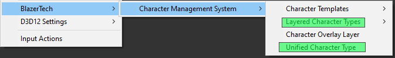
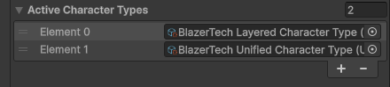
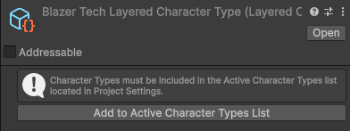
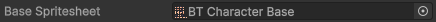
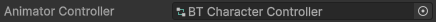
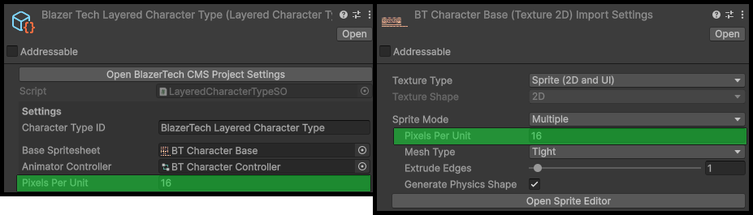

Character Types
The Character Management System supports two different character structures: Unified Characters and Layered Characters.
Once setup, both can be used the same way but differ in how the character is rendered and how it can be customized.
Read below to choose the correct type for your project.
Choosing a Character Type
| Feature | Unified Character | Layered Character |
|---|---|---|
| Spritesheets | One complete spritesheet | Multiple layered spritesheets |
| Runtime Customization | ❌ No | ✅ Yes |
| Setup Complexity | Simple | Moderate |
| Best For | Fixed characters or simple NPCs | Customizable characters or dynamic NPCs |
Unified Characters
A Unified Character uses a single spritesheet that contains the fully assembled character.

Best Used For
- Characters with fixed appearances
- Story characters that never change
- Projects that do not need character customization
Unified Characters are the simplest to create and manage, but they do not support any runtime customzation since the character is fully assembled beforehand.
Read More → Unified Character Type
Layered Characters
A Layered Character is split into multiple spritesheets. Each spritesheet is a layer of the character.

At runtime the system stacks each layer together to create the final character.
For example a character may contain the layers:
- Body
- Outfit
- Hairstyle
- Accessory
When the character is rendered:
- The body renders first
- The outfit renders on top of that
- the hairstyle renders above that
- accessory layer renders last
The layer order can be configured inside the editor.
Requirements
All layer spritesheets must:
- Be the exact same size
- Use the same layout
- Align to the same animation frames
Best Used For
- Customizable player characters
- Randomly generated NPCs
Read More → Layered Character Type
The Character Type Asset
Character types are the heart of the Character Management System, they are implemented using Scriptable Objects.

A Character Type asset stores the core configuration used by all characters of that type.
This includes:
- Base Spritesheet all characters use
- Animator Controller
- Layer Definitions (For Layered Character Types)
Note
A Character Type asset must exist before characters can be created.
Create a Character Type
A new Character Type asset can be created by right clicking the Project window and navigating to
Create > BlazerTech > Character Management System > (Choose Character Type)
You will then choose which character type to create:
- Unified Character Type
- Layered Character Type
A Character Type can only create characters of the same type.

Note
You will need a new Character Type for each set of characters that have a different spritesheet layout (EG: different animations, number of frames, etc.)
Active Character Types List
The Active Character Types list determines which Character Types are initialized when the game starts.
It can be found under: Project Settings > BlazerTech > Character Management System.

Only Character Types in this list will be useable at runtime.
When creating a new Character Type asset you will be promped to add it to the Active Character Types list automatically.

Character Type Setup
This section explains how to configure the fields inside the Character Type asset.
Setup specific to only Layered or Unified Character Types will be found in their own pages.
Character Type ID
A unique identifier for the Character Type

This ID must be unique among all Character Types listed in the Active Character Types list.
If two Character Types share the same ID, initialization will fail at runtime.
Base Spritesheet
The spritesheet all characters of the same type will use.

The Base Spritesheet contains all animation frames that characters of this type will use.
This spritesheet acts as a template for frame positions, sizes and animations.
All characters using the same Character Type must follow this layout.
Why All Characters Use the Same Base Spritesheet
The Character Shader uses the animation frames from the Base Spritesheet to determine which frame should be displayed.
instead of changing the animation itself, the shader replaces the visual sprites with the character's own spritesheet.
This allows:
- One Animator Controller to animate every character
- New characters to be added without creating new animations
Base Spritesheet Settings
The Base Spritesheet must use the correct import settings to work properly.
| Setting | Value | Reason |
|---|---|---|
| Sprite | Multiple | Allows the spritesheet to be sliced into frames |
| Compression | None (Recommended) | Prevents artifacts in pixel art |
| Filter Mode | Point (No Filter) | Keeps pixel art sharp |
Spritesheet Layout Requirements
All character spritesheets for this Character Type must:
- Use the same frame sizes
- Use the same frame positions
- Contain the same animation frames
This guarantees that animations line up correctly across all characters.
Example
If the Base Spritesheet contains the following animations:
- Idle (4 frames)
- Walk (6 frames)
- Run (6 frames)
Then every character spritesheet must also contain those same frames in the same positions.
Animator Controller (Optional)
All character share the same spritesheet layout, meaning one Animator Controller can animate every character of a single type.

This removes the need to create separate Animator Controllers or Animator Override Controllers for each character.
Note
An Animator Controller is not required if your project uses a different system for animating your characters. The only requirement is only sprites from the Base Spritesheet are used.
Confused? Read more about the Character Shader here.
See Character Animation Setup for instructions on configuring your Animator Controller.
Pixels Per Unit
The render scale of the character.

This value should match the Pixels Per Unit setting used in the Base Spritesheet.